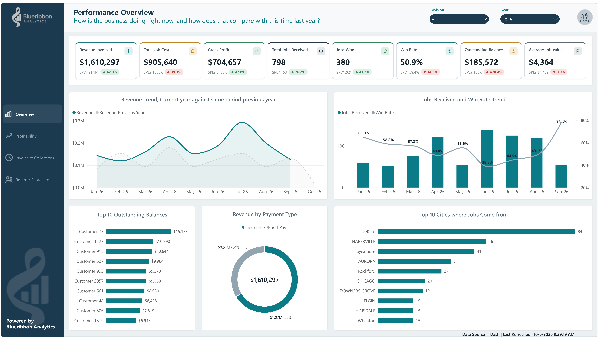

Your systems each tell part of the story.
Leads live in your CRM. Jobs sit in your operations software. Revenue and costs are in your accounts. Seeing how they connect means checking several places.
Power BI reporting for small businesses
We connect the data from your existing business tools into one Power BI reporting system, giving you a complete view of sales, finances and operations without the manual work of pulling reports together.
Let’s discuss your reporting ↗A 30-minute conversation with Royce about your setup and what you need to see.
Your first 30 days of Reporting System Management are included, guaranteed. We keep your connections and refreshes running, investigate discrepancies, and refine your reporting so it stays relevant as you put it to work.

Start with the overview. Compare performance. Find where to look closer.
See the reporting examples ↓Anonymized portfolio demonstration. Figures are illustrative.
Sales & CRM + Accounts + Operations + Spreadsheets
ONE CLEAR MANAGEMENT VIEWSound familiar?
Leads live in your CRM. Jobs sit in your operations software. Revenue and costs are in your accounts. Seeing how they connect means checking several places.
The information already exists, but you’re still exporting it, entering it into Excel and combining reports to get a usable view of the business.
Which leads turn into sales? How do jobs affect profit? Are we on track? Separate reports make it difficult to follow the whole picture from activity to results.
Reporting built for running the business
See your important numbers together, with comparisons that show whether performance is improving or slipping.
Find the customers, products, jobs or parts of the business that deserve a closer look.
Explore the underlying records and trends to understand the drivers behind the numbers.
See what that looks like
Different businesses. Different questions. Each example shows how the reporting can help management see more clearly.
Service business · Clean Co
Compare revenue, job costs, profit and win rate. See outstanding balances and the trends behind the headline numbers.
Explore the report ↗Healthcare · Invoice tracking
A clear view of unpaid invoices and aging balances helps management focus collection conversations.
Explore the report ↗
Retail · Southern Glow
Explore inventory and sales performance without repeatedly assembling the same spreadsheet.
Explore the report ↗
Skincare · Customer segmentation
Group customers by recency, frequency and value to identify who to nurture, reward or win back.
Explore the report ↗
Real estate · Sales visibility
Bring lead sources, appointments and contracts into a view of progress toward sales targets.
Explore the report ↗Anonymized portfolio examples based on client work. Names and data may be changed; displayed figures are illustrative, not claims of client results.
From scattered numbers to a working system
Our standard target is a live reporting system in 30 days. We review your sources and scope early, and agree any timeline changes before the full build.
We talk through your business, current reports and decisions. Then agree the questions, the numbers you need to track and the reporting blueprint.
We review how to bring your data together and set up the connections your systems support.
See the reporting take shape. Give feedback and check the numbers with us before launch.
Get the system live, walk through how to use it, and receive your first 30 days of Reporting System Management.
You bring access to your systems, business context and feedback. You don’t need to arrive with a finished dashboard specification.

Meet the person building your reporting system
You'll work directly with me, from our first conversation through to the launch of your Power BI reporting system.
With a background in finance and operations, I understand that the challenge isn't always a lack of data. It's that the information you need is sitting in different systems, making it difficult to see how the business is performing as a whole.
My job is to understand how your business works, connect the right data, and build a reporting system that brings it all together.
You don't need to know Power BI or come prepared with technical requirements. Just show me the systems you use and tell me what you're struggling to see. We'll work out the rest together.
Clear scope. Clear investment.
For small businesses ready to move beyond repeatedly assembling reports and start using their numbers to manage performance.
A clear proposal before we start
Whether you need a focused reporting project or a connected system, we’ll define the work and quote it before you commit.
For larger implementations, payments follow the project milestones:
You own your data and reporting system. Ongoing management after the included 30 days is agreed separately.
Before we talk
That’s where we start. We review your software, spreadsheets and available access, then recommend feasible connections. Some platforms support APIs; others require exports or a different approach. We confirm this during scoping.
No. The key is the reporting problem: important information is scattered, reports take too much effort, or management can’t easily see what needs attention. We assess the data and scope together.
Bring them to the conversation. We’ll look at what works, what’s missing and whether improving the current setup or building a more complete system makes sense.
We set up refreshes where your data sources and access support them. The update schedule and any remaining manual steps are agreed for your system, so you know what to expect.
Power BI licensing and any required hosting or data services depend on your setup. We identify these during scoping. Continued Reporting System Management beyond the included 30 days is separately agreed.
You’ll speak with Royce about the systems you use, the reporting you do today and the questions you want answered. We’ll discuss whether Blueribbon can help and what a sensible next step looks like. You don’t need to prepare a technical brief.
Prefer to write first?
Which systems do you use? What are you piecing together by hand? Share a little about your reporting and what you want to change.
No technical brief needed.
Start with the questions you need answered
Tell me what you’re trying to understand about your business.
We’ll talk through how your reporting could help.
30 minutes. Directly with Royce.
Prefer email? royce@blueribbonanalytics.com